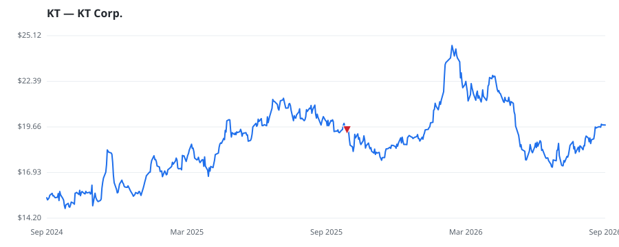

bullish · bearish · n/a — dots: price>SMA10 · SMA10>SMA50 · SMA50>SMA200 · up>down volume (20d)
Other · mid cap

KT is South Korea's largest fixed-line telecom operator, with around 11.5 million fixed-line broadband customers and 9.5 million IPTV customers, and is the second-largest wireless operator with 28 million subscribers. Additionally, it has a number of nontelecom businesses, including real estate, payment processing, artificial intelligence, and IDC/cloud services, many of which are the focus of its growth strategy. The company was formed from the previously government-owned, monopoly telecom business and was listed in 1998. After selling its mobile business in 1994 (forming its mobile competito · website
| Fund | Fund alpha vs SPY | Position | % of book |
|---|---|---|---|
| NAN FUNG TRINITY (HK) Ltd | +24% | $34M | 3.3% |
| North of South Capital LLP | +20% | $4M | 0.3% |
Hedge data: SEC EDGAR 13F · ranked funds beat SPY in >50% of their quarters · fund alpha = mirror-portfolio return minus SPY.